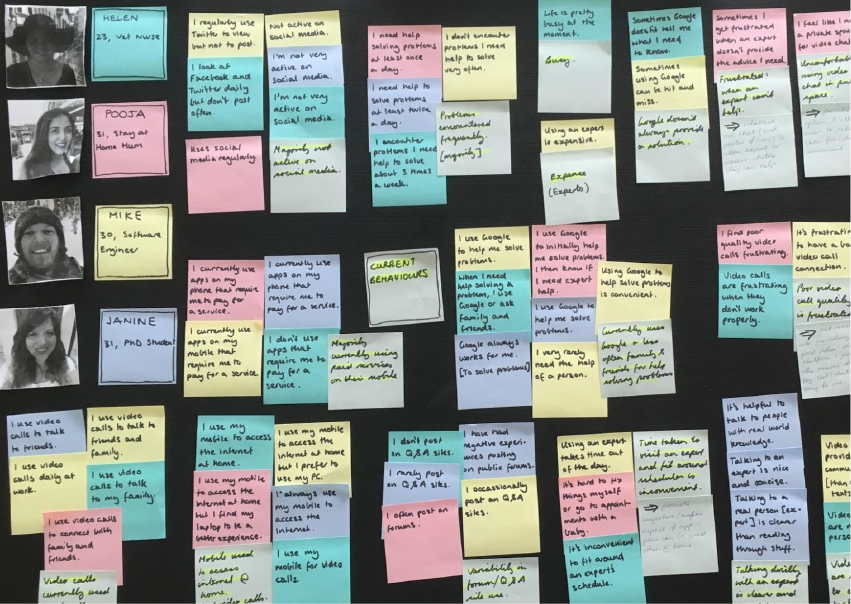
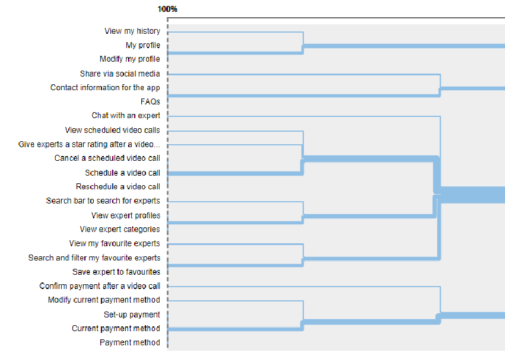

Rachel Butler
UX Designer.

Usability Testing
Usability testing uncovered fixible usability issues that made a huge difference to the user experience.

User Research
User interviews and affinity mapping were used to ensure that my designs were firmly grounded with the user in mind.

User Personas
I userd mental models and user flows to make sure the features of my app were rooted in well researched behaviour of real people.

IA Design
I refined my IA using the results of open card sorting, conducted using OptimalSort.